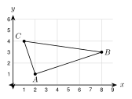
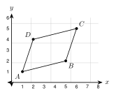
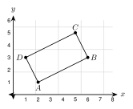
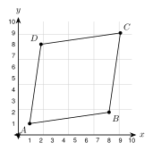
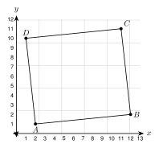
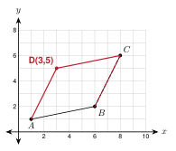

2.9 - Checking Shapes with Coordinates
A builder tells you, “This frame is a rectangle.” You look at it, and it looks like a rectangle. Is it? A picture can fool your eyes. A frame can be off by a small amount and still look right.
In geometry, “it looks true” is not enough. We want to know it is true for sure. When a shape sits on a coordinate plane, we can check it with numbers: slopes and distances. If the numbers say yes, no one can argue. This is called computation as proof. In this lesson you use it on triangles and four-sided shapes.
Printable Guided Notes for this lesson (fill-in notes to print and write on)
🔥 Warm Up
Find the slope of the line through \((-1, 2)\) and \((3, 5)\).
Find the distance from \((-2, 1)\) to \((1, 5)\).
Solve \(2x - 3 = x + 5\).
👥 Learn Together
2.9.1 - Is It a Right Triangle?
A right triangle has a \(90^\circ\) angle. There are two ways to check for it with coordinates.
Way 1: slopes. Two sides are perpendicular if their slopes are opposite reciprocals (the product is \(-1\)). Find the slope of each side at a corner.
Way 2: distances. Find all three side lengths. Use the converse of the Pythagorean theorem (Lesson 2.2): the sum of the squares of the two short sides must equal the square of the longest side.
Every time, finish with a sentence that starts with “Because.” This sentence is the proof.
Example 1: Show that triangle \(ABC\) with \(A(2, 1)\), \(B(8, 3)\), and \(C(1, 4)\) is a right triangle. Use both ways.

Way 1. Slope of \(\overline{AB}\): \(\dfrac{3 - 1}{8 - 2} = \dfrac{1}{3}\). Slope of \(\overline{AC}\): \(\dfrac{4 - 1}{1 - 2} = -3\).
The product is \(\dfrac{1}{3} \cdot (-3) = -1\).
Way 2. \(AB^2 = 6^2 + 2^2 = 40\). \(AC^2 = (-1)^2 + 3^2 = 10\). \(BC^2 = (-7)^2 + 1^2 = 50\).
\(AB^2 + AC^2 = 40 + 10 = 50 = BC^2\).
Because the slopes of \(\overline{AB}\) and \(\overline{AC}\) have a product of \(-1\) (and \(AB^2 + AC^2 = BC^2\)), \(\overline{AB} \perp \overline{AC}\). Triangle \(ABC\) is a right triangle with the right angle at \(A\).
Example 2: Is triangle \(PQR\) with \(P(0, 0)\), \(Q(6, 2)\), and \(R(4, 6)\) a right triangle?
Slopes: \(\overline{PQ}\): \(\dfrac{2}{6} = \dfrac{1}{3}\). \(\overline{PR}\): \(\dfrac{6}{4} = \dfrac{3}{2}\). \(\overline{QR}\): \(\dfrac{6 - 2}{4 - 6} = -2\).
Products: \(\dfrac{1}{3} \cdot \dfrac{3}{2} = \dfrac{1}{2}\), \(\dfrac{1}{3} \cdot (-2) = -\dfrac{2}{3}\), \(\dfrac{3}{2} \cdot (-2) = -3\). None is \(-1\).
Check by distance: \(PQ^2 = 40\), \(PR^2 = 52\), \(QR^2 = 20\). \(40 + 20 = 60\), which is not 52.
Because no pair of sides is perpendicular, triangle \(PQR\) is not a right triangle.
Slope of \(\overline{DE}\) is \(\dfrac{1}{2}\). Slope of \(\overline{DF}\) is \(\dfrac{2}{-1} = -2\). The product is \(-1\). Because \(\overline{DE} \perp \overline{DF}\), the triangle is a right triangle with the right angle at \(D\).
2.9.2 - Isosceles or Equilateral?
An isosceles triangle has two sides of equal length. An equilateral triangle has three. Find the three side lengths with the distance formula and compare them.
Example 4: Is triangle \(ABC\) with \(A(1, 1)\), \(B(7, 1)\), and \(C(4, 5)\) isosceles? Is it equilateral?
\(AB = |7 - 1| = 6\).
\(AC = \sqrt{3^2 + 4^2} = 5\). \(BC = \sqrt{(-3)^2 + 4^2} = 5\).
Because \(AC = BC = 5\), triangle \(ABC\) is isosceles. It is not equilateral, because \(AB = 6\) is different.
Example 5: Show that the triangle with \(A(1, 1)\), \(B(5, 1)\), and \(C(3, 1 + 2\sqrt{3})\) is equilateral.
\(AB = 4\).
\(AC = \sqrt{2^2 + (2\sqrt{3})^2} = \sqrt{4 + 12} = 4\). \(BC = \sqrt{(-2)^2 + (2\sqrt{3})^2} = \sqrt{16} = 4\).
Because \(AB = AC = BC = 4\), triangle \(ABC\) is equilateral.
\(PQ = 4\). \(PR = \sqrt{4 + 16} = \sqrt{20}\). \(QR = \sqrt{4 + 16} = \sqrt{20}\). Because \(PR = QR\), triangle \(PQR\) is isosceles.
2.9.3 - Four-Sided Shapes
Here are the definitions we use to check shapes. (In Unit 4 you learn many more facts about them.)
| Shape | What to check with coordinates |
|---|---|
| Parallelogram | Opposite sides have equal slopes (both pairs) |
| Rectangle | A parallelogram, and two sides at a corner have slopes with product \(-1\) |
| Rhombus | All four sides have the same length (distance formula) |
| Square | A rectangle and a rhombus together |
Example 7: Is \(ABCD\) with \(A(1, 1)\), \(B(5, 2)\), \(C(6, 5)\), \(D(2, 4)\) a parallelogram? A rectangle? A rhombus?

Slopes: \(\overline{AB}\): \(\dfrac{2 - 1}{5 - 1} = \dfrac{1}{4}\). \(\overline{DC}\): \(\dfrac{5 - 4}{6 - 2} = \dfrac{1}{4}\). \(\overline{AD}\): \(\dfrac{4 - 1}{2 - 1} = 3\). \(\overline{BC}\): \(\dfrac{5 - 2}{6 - 5} = 3\).
Because both pairs of opposite sides have equal slopes, \(ABCD\) is a parallelogram.
Rectangle? \(\dfrac{1}{4} \cdot 3 = \dfrac{3}{4}\), not \(-1\). The corner at \(A\) is not a right angle. It is not a rectangle.
Rhombus? \(AB = \sqrt{17}\) and \(AD = \sqrt{10}\). They are not equal. It is not a rhombus.
So \(ABCD\) is a parallelogram and nothing more specific.
Example 8: Is \(ABCD\) with \(A(2, 1)\), \(B(6, 3)\), \(C(5, 5)\), \(D(1, 3)\) a rectangle? A square?

Slopes: \(\overline{AB}\) and \(\overline{DC}\) are both \(\dfrac{1}{2}\). \(\overline{AD}\) and \(\overline{BC}\) are both \(-2\). It is a parallelogram.
At \(A\): \(\dfrac{1}{2} \cdot (-2) = -1\). There is a right angle.
Because \(ABCD\) is a parallelogram with a right angle, it is a rectangle.
Square? \(AB = \sqrt{20}\) and \(AD = \sqrt{5}\). Not equal. So it is a rectangle but not a square.
Example 9: Is \(ABCD\) with \(A(1, 1)\), \(B(6, 1)\), \(C(9, 5)\), \(D(4, 5)\) a rhombus? A square?
\(AB = 5\). \(BC = \sqrt{3^2 + 4^2} = 5\). \(CD = 5\). \(DA = \sqrt{(-3)^2 + (-4)^2} = 5\).
Because all four sides have length 5, \(ABCD\) is a rhombus.
Square? \(\overline{AB}\) is horizontal (slope 0). \(\overline{AD}\) has slope \(\dfrac{4}{3}\). They are not perpendicular. So it is a rhombus but not a square.
\(AB = 4\) and \(BC = 4\), and all sides are 4. \(\overline{AB}\) is horizontal and \(\overline{BC}\) is vertical, so they are perpendicular. Because \(ABCD\) has four equal sides and a right angle, it is a square.
2.9.4 - Looks Like, or Is?
Drawings can look right and be wrong. Only the numbers tell. Look at these two shapes.
Example 11: The shape \(ABCD\) with \(A(1, 1)\), \(B(8, 2)\), \(C(9, 9)\), \(D(2, 8)\) looks like a tilted square. Is it a square?

\(AB = \sqrt{7^2 + 1^2} = \sqrt{50}\). \(BC = \sqrt{1^2 + 7^2} = \sqrt{50}\). \(CD = \sqrt{50}\). \(DA = \sqrt{50}\). All four sides are equal, so it is a rhombus.
Slope of \(\overline{AB}\): \(\dfrac{1}{7}\). Slope of \(\overline{AD}\): \(\dfrac{7}{1} = 7\). The product is \(\dfrac{1}{7} \cdot 7 = 1\), not \(-1\).
Because \(\overline{AB}\) and \(\overline{AD}\) are not perpendicular, \(ABCD\) is not a square. It is a rhombus.
Example 12: The shape \(ABCD\) with \(A(2, 1)\), \(B(12, 2)\), \(C(11, 11)\), \(D(1, 10)\) looks like a rectangle. Is it?

Slopes: \(\overline{AB}\) and \(\overline{DC}\) are both \(\dfrac{1}{10}\). \(\overline{AD}\) and \(\overline{BC}\) are both \(\dfrac{9}{-1} = -9\). It is a parallelogram.
At \(A\): \(\dfrac{1}{10} \cdot (-9) = -\dfrac{9}{10}\). This is close to \(-1\), but it is not \(-1\).
Because the product is \(-\dfrac{9}{10}\), there is no right angle. \(ABCD\) is not a rectangle. It is a parallelogram.
Does “four equal sides” make a square? No. The rhombus in the example has four equal sides and is not a square. One example that breaks a rule is a counterexample. It is enough to show the rule is false.
Hnin says: “\(ABCD\) with \(A(1, 1)\), \(B(5, 2)\), \(C(6, 5)\), \(D(2, 4)\) is a rectangle because its opposite sides are equal.”
The opposite sides are equal, but that is also true for a parallelogram that is not a rectangle. The missing check is a right angle. Here \(\dfrac{1}{4} \cdot 3 = \dfrac{3}{4}\), so there is no right angle. It is not a rectangle.
Use the rhombus \(A(1, 1)\), \(B(6, 1)\), \(C(9, 5)\), \(D(4, 5)\). All sides are 5, but the corner at \(A\) is not a right angle (slopes 0 and \(\dfrac{4}{3}\)).
2.9.5 - Finding the Fourth Vertex
In a parallelogram, going from \(B\) to \(C\) is the same step as going from \(A\) to \(D\). If you know \(A\), \(B\), and \(C\), take the step from \(B\) to \(C\) and add it to \(A\) to get \(D\).
Example 14: Three vertices of parallelogram \(ABCD\) are \(A(1, 1)\), \(B(6, 2)\), and \(C(8, 6)\). Find \(D\). Check your answer.

Step from \(B\) to \(C\): \((8 - 6,\ 6 - 2) = (2,\ 4)\).
\(D = (1 + 2,\ 1 + 4) = (3,\ 5)\).
Check with slopes: \(\overline{AB}\): \(\dfrac{1}{5}\) and \(\overline{DC}\): \(\dfrac{6 - 5}{8 - 3} = \dfrac{1}{5}\). \(\overline{AD}\): \(\dfrac{4}{2} = 2\) and \(\overline{BC}\): \(\dfrac{4}{2} = 2\).
Because both pairs of opposite sides have equal slopes, \(ABCD\) with \(D(3, 5)\) is a parallelogram.
Step from \(Q\) to \(R\): \((2, 4)\). \(S = P + (2, 4) = (2, 4)\).
✍️ Practice On Your Own
Right triangle? Use slopes or distances. Write the “Because” sentence.
\(A(0, 0)\), \(B(4, 2)\), \(C(-1, 2)\)
\(P(-2, 1)\), \(Q(2, 3)\), \(R(4, -1)\)
\(X(0, 0)\), \(Y(5, 1)\), \(Z(2, 4)\)
Isosceles, equilateral, or neither? Find all three side lengths.
\((-4, 0)\), \((2, 0)\), \((-1, 5)\)
\((0, 0)\), \((4, 0)\), \((1, 3)\)
\((0, 0)\), \((6, 0)\), \((3, 3\sqrt{3})\)
Name each quadrilateral as specifically as you can: parallelogram, rectangle, rhombus, square, or none of these. Show your checks.
\(A(0, 0)\), \(B(6, 0)\), \(C(8, 3)\), \(D(2, 3)\)
\(A(0, 0)\), \(B(3, 4)\), \(C(8, 4)\), \(D(5, 0)\)
\(A(1, 2)\), \(B(5, 0)\), \(C(7, 4)\), \(D(3, 6)\)
\(A(0, 0)\), \(B(4, 0)\), \(C(5, 3)\), \(D(0, 3)\)
Looks like, or is?
The shape looks like a rectangle. Is it? Use slopes. (\(P(0, 0)\), \(Q(8, 1)\), \(R(7, 8)\), \(S(-1, 7)\))
Kofi says every quadrilateral with four equal sides is a square. Give a counterexample with coordinates.
Moses says \(A(0, 0)\), \(B(5, 1)\), \(C(6, 6)\), \(D(1, 5)\) is a square because all sides are \(\sqrt{26}\). Find his mistake.
Find the fourth vertex.
Parallelogram \(ABCD\) has \(A(0, 0)\), \(B(7, 1)\), \(C(9, 5)\). Find \(D\).
Rectangle \(ABCD\) has \(A(-3, 1)\), \(B(1, -1)\), \(C(3, 3)\). Show that the corner at \(B\) is a right angle. Find \(D\).
Test practice
Triangle \(ABC\) has vertices \(A(-1, 2)\), \(B(5, 2)\), and \(C(2, 6)\). Which statement about the triangle is true?
A. It is an equilateral triangle.
B. It is an isosceles triangle that is not equilateral.
C. It is a right triangle.
D. It is a scalene triangle.Quadrilateral \(PQRS\) has vertices \(P(0, 0)\), \(Q(4, 2)\), \(R(2, 6)\), and \(S(-2, 4)\). What is the most specific name for \(PQRS\)?
A. parallelogram
B. rectangle
C. rhombus
D. square
Challenge
Rectangle \(ABCD\) has \(A(0, 0)\), \(B(4, 3)\), and \(D(-3, 4)\). Find \(C\). Then show that the diagonals \(\overline{AC}\) and \(\overline{BD}\) have the same length.
Three vertices of a parallelogram are \((0, 0)\), \((4, 1)\), and \((1, 3)\). There are three different points that can be the fourth vertex. Find all three.